<!doctype html>
<html lang="ro">
<head>
<meta charset="utf-8">
<meta name="viewport" content="width=device-width, initial-scale=1, viewport-fit=cover">
<title>Misiunea Cadru</title>
<meta name="description" content="Lecție-joc pentru clasa a VI-a: animații grafice în Scratch (interfață, gestionare, scenariu, cadre, proprietăți, mișcare, temporizare, sunet, control de la tastatură) și primele modele 3D.">
<link rel="preconnect" href="https://fonts.googleapis.com">
<link rel="preconnect" href="https://fonts.gstatic.com" crossorigin>
<link rel="stylesheet" href="https://fonts.googleapis.com/css2?family=Grandstander:wght@600;800&family=Readex+Pro:wght@400;600;700&family=Courier+Prime:wght@400;700&display=swap&subset=latin-ext">
<link rel="stylesheet" href="../_motor/motor.css">
<style>
:root{
  --desk:#EEF1F2; --paper:#FFFFFF; --paper2:#F2F6F6; --line:#CFDADB;
  --ink:#13232A; --ink2:#4B5F66; --accent:#0B6873; --accentInk:#FFFFFF; --sel:#D3ECEE;
  --mark:#FFD86B; --markInk:#13232A; --ok:#1F7A45; --okbg:#DFF2E6; --bad:#B8323A; --badbg:#F9E3E4;
  --fd:"Grandstander","Segoe UI",system-ui,sans-serif; --fb:"Readex Pro","Segoe UI",system-ui,sans-serif; --fm:"Courier Prime",Consolas,monospace;
  --film:#1B1F22; --cadru:#F4EBD6; --bila:#E0662B;
}
@media (prefers-color-scheme:dark){:root:not([data-theme="light"]){
  --desk:#0E1618; --paper:#152023; --paper2:#1B292D; --line:#2E4146;
  --ink:#E6EFF0; --ink2:#A2B6BA; --accent:#5CC6D0; --accentInk:#0E1618; --sel:#1D4046;
  --mark:#EBC654; --markInk:#13232A; --ok:#6FCF94; --okbg:#173022; --bad:#FF8A8F; --badbg:#3A1D20;
  --film:#050708; --cadru:#D9CFB8; --bila:#E0662B;
}}
:root[data-theme="dark"]{
  --desk:#0E1618; --paper:#152023; --paper2:#1B292D; --line:#2E4146;
  --ink:#E6EFF0; --ink2:#A2B6BA; --accent:#5CC6D0; --accentInk:#0E1618; --sel:#1D4046;
  --mark:#EBC654; --markInk:#13232A; --ok:#6FCF94; --okbg:#173022; --bad:#FF8A8F; --badbg:#3A1D20;
  --film:#050708; --cadru:#D9CFB8; --bila:#E0662B;
}
/* tema jocului: o bandă de film cu perforații; în cadrele ei o minge urcă și coboară, cadru cu cadru */
.banda{position:relative;display:flex;gap:6px;padding:9px 10px;overflow:hidden;background:var(--film)}
.banda::before,.banda::after{content:"";position:absolute;left:0;right:0;height:5px;
  background:repeating-linear-gradient(90deg,transparent 0 6px,#E9E4D8 6px 12px)}
.banda::before{top:2px}.banda::after{bottom:2px}
.cd{flex:none;position:relative;width:34px;height:24px;background:var(--cadru);border-radius:2px}
.cd i{position:absolute;left:12px;width:10px;height:10px;border-radius:50%;background:var(--bila)}
.cd b{position:absolute;left:3px;right:3px;bottom:2px;height:2px;background:#8C8270}
h1 .sag{color:var(--accent)}
</style>
</head>
<body>
<script src="../_motor/motor.js"></script>
<script>
// banda: 12 cadre, mingea sare (poziția de sus în pixeli pe fiecare cadru)
const SUS=[12,7,3,1,3,7,12,7,3,1,3,7];
const BANDA=SUS.map(t=>`<span class="cd"><i style="top:${t}px"></i><b></b></span>`).join('');

const LEVELS=[
{t:'Studioul de animație',lectii:[27],continuturi:['Elemente de interfață ale unei aplicații de animație grafică','Instrumente de bază ale unei aplicații de animație grafică'],text:`
<p>La ore facem animații în <mark>Scratch</mark>. Interfața lui în română are câteva zone:</p>
<ul>
<li><mark>scena</mark>, de 480 × 360 de pixeli, unde se joacă animația;</li>
<li><mark>personajele</mark>, adică obiectele pe care le animăm (în engleză <em>sprites</em>);</li>
<li><mark>decorul</mark>, adică fundalul scenei.</li>
</ul>
<p>Sus ai trei file: <strong>Cod</strong>, <strong>Costume</strong> și <strong>Sunete</strong> (în engleză <em>Code, Costumes, Sounds</em>). Instrumentele de bază sunt blocurile, așezate pe categorii (Mișcare, Aspect, Sunet, Evenimente, Control…), și editorul de desen de la Costume, cu pensulă, radieră și umplere.</p>
<p><strong>Steagul verde</strong> pornește animația, iar butonul roșu <strong>Stop</strong> o oprește.</p>
<figure class="captura"><a href="../animatii-3d-vi/img/scratch-file-categorii.webp" target="_blank">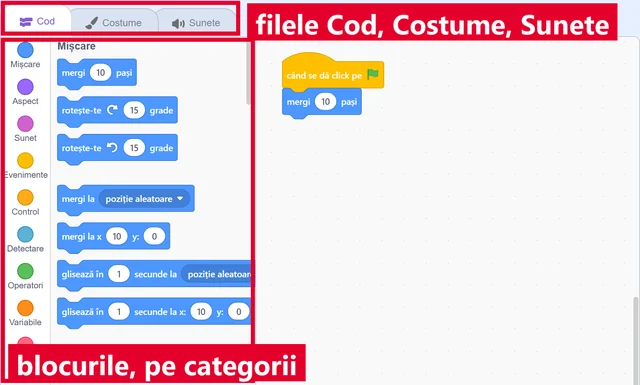</a>
<figcaption>Sus, filele <b>Cod</b>, <b>Costume</b> și <b>Sunete</b>. Dedesubt, blocurile, așezate pe categorii colorate: Mișcare, Aspect, Sunet, Evenimente, Control…</figcaption></figure>
<figure class="captura"><a href="../animatii-3d-vi/img/scratch-scena-personaje.webp" target="_blank">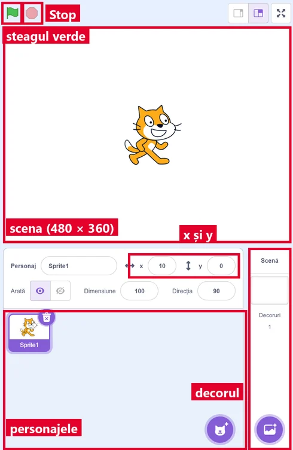</a>
<figcaption>În dreapta: <b>steagul verde</b> și <b>Stop</b>, <b>scena</b>, apoi panoul personajului, cu <b>x</b> și <b>y</b>. Dedesubt, lista de <b>personaje</b>, iar în coloana <b>Scenă</b>, <b>decorul</b>.</figcaption></figure>
<figure class="captura"><a href="../animatii-3d-vi/img/scratch-desen-unelte.webp" target="_blank">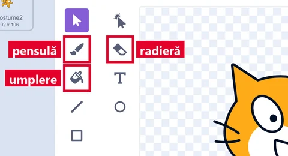</a>
<figcaption>Fila <b>Costume</b>: editorul de desen, cu <b>Pensulă</b>, <b>Radieră</b> și <b>Umplere</b>. Numele apare când ții mouse-ul pe unealtă.</figcaption></figure>`,
qs:[
 {t:'choice',q:'În ce zonă vezi animația în timp ce rulează?',o:['Pe scenă','În zona de cod','În fila Sunete','În lista de categorii de blocuri'],ok:0,why:'Scena e „ecranul” animației. În zona de cod doar construiești scripturile, iar fila Sunete e pentru sunete.'},
 {t:'match',q:'Leagă fiecare parte din Scratch de ce faci acolo.',pairs:[['Cod','îmbini blocurile în scripturi'],['Costume','desenezi sau alegi înfățișările personajului'],['Sunete','adaugi și modifici sunete'],['Decor','fundalul din spatele personajelor']],why:'Fiecare filă are treaba ei. Dacă nu găsești ceva, uită-te întâi dacă ești pe fila potrivită.'},
 {t:'classify',q:'În ce categorie de blocuri cauți?',cats:['Mișcare','Aspect','Sunet'],items:[['mergi 10 pași',0],['glisează în 1 secunde la x: 0 y: 0',0],['costumul următor',1],['spune Salut! pentru 2 secunde',1],['pornește sunetul Miau',2],['modifică volumul cu -10',2]],why:'Mișcare = unde se află personajul. Aspect = cum arată și ce spune. Sunet = ce se aude. Categoriile au și culori diferite.'},
 {t:'tf',q:'În Scratch în română, ce în engleză se numește „sprite” apare ca „personaj”.',ok:true,why:'Adevărat. În interfața în română vezi „Personaj”, „Alege un personaj”, „Încarcă personaj”.'},
 {t:'choice',q:'Un personaj are x: 0 și y: 0. Unde se află pe scenă?',o:['În mijlocul scenei','În colțul din stânga sus','În colțul din stânga jos','Pe marginea din dreapta'],ok:0,why:'Punctul x: 0, y: 0 e centrul scenei. Spre dreapta x crește, spre stânga scade. Spre sus y crește, spre jos scade.'}
]},
{t:'Proiectul meu: creez, salvez, testez',lectii:[28],continuturi:['Operații de gestionare a animațiilor: creare, deschidere, expunere, salvare, închidere, testare, depanare'],text:`
<p>Toate operațiile cu proiectul pornesc din meniul <strong>Fișier</strong>:</p>
<ul>
<li><strong>Nou</strong> începe un proiect gol.</li>
<li><strong>Salvează pe calculatorul tău</strong> păstrează proiectul într-un fișier <code>.sb3</code>. Data viitoare îl <mark>deschizi</mark> tot din meniul Fișier, cu comanda de încărcare de pe calculator.</li>
<li>Dacă lucrezi online, cu cont, ai și <strong>Salvează acum</strong>.</li>
</ul>
<p><mark>Expunerea</mark>: butonul de ecran complet de deasupra scenei arată animația mare.</p>
<p><mark>Testarea</mark>: pornești cu steagul verde și urmărești dacă se întâmplă ce ai plănuit.</p>
<p><mark>Depanarea</mark>: găsești blocul greșit, îl repari și testezi din nou.</p>
<p>La <mark>închidere</mark>: întâi salvezi, apoi închizi.</p>
<figure class="captura"><a href="../animatii-3d-vi/img/scratch-meniu-fisier.webp" target="_blank">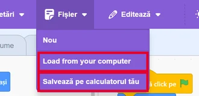</a>
<figcaption>Meniul <b>Fișier</b>: <i>Nou</i>, <i>Load from your computer</i> (încarcă de pe calculator; în editorul online apare netradus) și <i>Salvează pe calculatorul tău</i>.</figcaption></figure>
<figure class="captura"><a href="../animatii-3d-vi/img/scratch-ecran-complet.webp" target="_blank">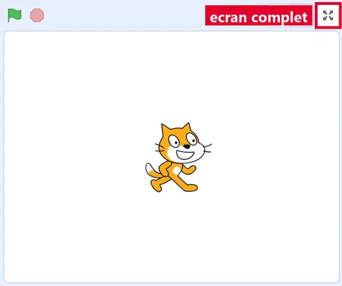</a>
<figcaption>Butonul de <b>ecran complet</b>, deasupra scenei, în dreapta.</figcaption></figure>`,
qs:[
 {t:'choice',q:'Ce fel de fișier primești când salvezi un proiect Scratch pe calculator?',o:['.sb3','.pptx','.docx','.png'],ok:0,why:'.sb3 e formatul proiectelor Scratch 3. .pptx e o prezentare, .docx un document Word, iar .png o singură imagine, fără scripturi.'},
 {t:'order',q:'Pune în ordine lucrul la o animație nouă.',items:['Fișier › Nou','Construiești scripturile','Testezi cu steagul verde','Repari ce nu merge (depanare)'],why:'Nu poți testa ce n-ai construit și nu poți repara o greșeală pe care n-ai văzut-o încă la test.'},
 {t:'tf',q:'Lucrezi fără cont. Dacă închizi fereastra fără să salvezi pe calculator, animația se pierde.',ok:true,why:'Adevărat. Fără cont, Scratch nu păstrează singur proiectul. Salvezi pe calculator înainte să închizi.'},
 {t:'match',q:'Leagă operația de ce înseamnă.',pairs:[['Testare','rulezi și urmărești ce se întâmplă'],['Depanare','găsești greșeala și o repari'],['Expunere','arăți animația pe tot ecranul'],['Salvare','păstrezi proiectul într-un fișier']],why:'Testarea arată că e o problemă. Depanarea o rezolvă. Apoi testezi din nou.'},
 {t:'choice',q:'Pisica trebuia să meargă spre dreapta, dar merge spre stânga. Ce faci întâi?',o:['Cauți blocul care o mișcă și verifici numărul','Ștergi tot proiectul și o iei de la capăt','Schimbi decorul','Salvezi încă o dată proiectul'],ok:0,why:'Depanarea începe de la blocul vinovat. Un număr cu minus (de exemplu -10) o trimite spre stânga.'}
]},
{t:'Scenariul și cadrele',lectii:[29],continuturi:['Scenariul unei animații: compoziție, cadre, obiecte animate'],text:`
<p>Înainte de blocuri, scrii <mark>scenariul</mark>: ce se întâmplă, în ce ordine și cine apare.</p>
<p><mark>Compoziția</mark> înseamnă cum așezi pe scenă decorul și personajele. <mark>Obiectele animate</mark> sunt personajele care se mișcă sau se schimbă.</p>
<p>Un <mark>cadru</mark> este o singură imagine. Când imagini puțin diferite se schimbă repede, ochiul vede mișcare, ca la un caiet cu desene răsfoit repede. La cinema trec 24 de cadre pe secundă. Scratch redesenează scena de aproximativ 30 de ori pe secundă.</p>
<p>În Scratch, cadrele unui personaj sunt <strong>costumele</strong> lui. Blocul <em>costumul următor</em> trece la cadrul următor.</p>
<figure class="captura"><a href="../animatii-3d-vi/img/scratch-costume-cadre.webp" target="_blank">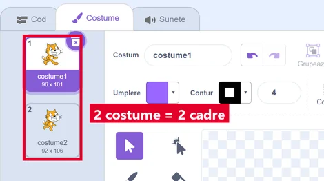</a>
<figcaption>Fila <b>Costume</b>: pisica are 2 costume, adică 2 cadre, cu picioarele în poziții diferite.</figcaption></figure>
<figure class="captura"><a href="../animatii-3d-vi/img/scratch-costumul-urmator.webp" target="_blank">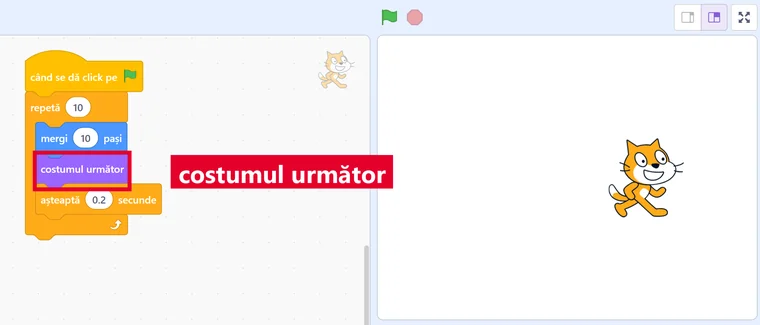</a>
<figcaption>Cu <em>costumul următor</em> în repetiție, pisica schimbă cadrul la fiecare pas și pare că merge.</figcaption></figure>`,
qs:[
 {t:'choice',q:'Ce este un cadru?',o:['O singură imagine din animație','Toată animația, de la început la sfârșit','Sunetul de fundal','Personajul principal'],ok:0,why:'Animația e făcută din multe cadre. Fiecare cadru e o imagine nemișcată; mișcarea apare când ele se schimbă repede.'},
 {t:'tf',q:'Cu cât cadrele sunt mai asemănătoare și se schimbă mai des, cu atât mișcarea pare mai lină.',ok:true,why:'Adevărat. Diferențe mari între cadre sau cadre prea rare fac mișcarea să „sară”.'},
 {t:'order',q:'Scenariul „Golul”: pune scenele în ordine.',items:['Apare terenul de fotbal','Copilul lovește mingea','Mingea zboară spre poartă','Mingea intră în poartă și se aude „Gol!”'],why:'Ordinea vine din poveste: mingea nu poate zbura înainte să fie lovită, iar golul vine la sfârșit.'},
 {t:'classify',q:'Stă pe loc în decor sau e obiect animat?',cats:['Parte din decor','Obiect animat'],items:[['copacii desenați în fundal',0],['pasărea care zboară',1],['casa pictată în fundal',0],['câinele care aleargă',1],['munții din spate',0],['iepurele care sare',1]],why:'Decorul e fundalul, nu se mișcă. Obiectele animate sunt personaje cu scripturi sau costume care se schimbă.'},
 {t:'choice',q:'Pisica are 2 costume, cu picioarele în poziții diferite. Cum o faci să pară că merge?',o:['Schimbi costumele pe rând în timp ce o muți','O faci mai mare la fiecare pas pe care îl face','Schimbi decorul de fiecare dată când o muți','Îi adaugi un sunet de pași și o lași pe loc'],ok:0,why:'Costumele sunt cadrele pisicii. Schimbate pe rând, în timp ce pisica înaintează, dau impresia de pași.'}
]},
{t:'Editez compoziția și obiectele',lectii:[30],continuturi:['Operații de editare a unei compoziții: inserare, copiere, mutare, ștergere a obiectelor/cadrelor','Operații de editare a proprietăților unui obiect: dimensionare, rotire, transparență, poziționare'],text:`
<p><mark>Editarea compoziției</mark>: <strong>inserezi</strong> un personaj (îl alegi, îl desenezi sau îl încarci), îl <strong>copiezi</strong> (clic dreapta › duplică), îl <strong>muți</strong> trăgându-l pe scenă sau îl <strong>ștergi</strong> (clic dreapta › șterge). La fel faci cu costumele, adică cu cadrele, în fila Costume.</p>
<p><mark>Proprietățile</mark> personajului se văd sub scenă:</p>
<ul>
<li><strong>x</strong> și <strong>y</strong> = poziția;</li>
<li><strong>Dimensiune</strong> = mărimea, în procente (100 = normal);</li>
<li><strong>Direcția</strong> = încotro e întors (90 = spre dreapta).</li>
</ul>
<p><mark>Transparența</mark> se face cu efectul <em>fantomă</em>: 0 = se vede complet, 100 = nu se mai vede.</p>
<figure class="captura"><a href="../animatii-3d-vi/img/scratch-proprietati.webp" target="_blank">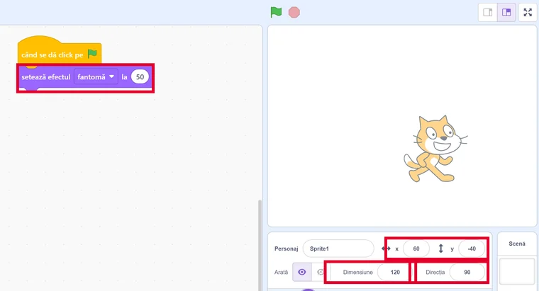</a>
<figcaption>Sub scenă: <b>x</b> = 60, <b>y</b> = -40, <b>Dimensiune</b> 120, <b>Direcția</b> 90. Blocul <em>setează efectul fantomă la 50</em> a făcut pisica pe jumătate transparentă.</figcaption></figure>
<figure class="captura"><a href="../animatii-3d-vi/img/scratch-duplica-sterge.webp" target="_blank">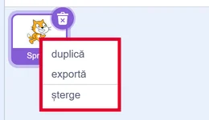</a>
<figcaption>Clic dreapta pe personaj: <i>duplică</i>, <i>exportă</i>, <i>șterge</i>.</figcaption></figure>`,
qs:[
 {t:'choice',q:'Vrei 5 copaci la fel pe scenă. Care e calea cea mai rapidă?',o:['Faci un copac și îl duplici','Desenezi 5 copaci, pe rând','Schimbi decorul de 5 ori','Mărești dimensiunea copacului'],ok:0,why:'Duplicarea face o copie cu tot ce are personajul: costume, sunete și scripturi. Apoi doar muți copiile.'},
 {t:'match',q:'Leagă proprietatea de ce schimbă.',pairs:[['x','poziția spre stânga sau spre dreapta'],['y','poziția în sus sau în jos'],['Dimensiune','mărimea, în procente'],['Direcția','încotro e întors personajul']],why:'Cu aceste patru proprietăți așezi orice personaj exact unde și cum vrei.'},
 {t:'choice',q:'Ce face blocul „setează efectul fantomă la 100”?',o:['Personajul nu se mai vede, dar rămâne în proiect','Personajul devine de 100 de ori mai mare','Personajul devine alb','Personajul e șters din proiect'],ok:0,why:'Fantoma e transparența. La 100 personajul e complet transparent, dar există în continuare. Îl readuci cu efectul fantomă la 0.'},
 {t:'tf',q:'Dimensiune 200 înseamnă că personajul e de două ori mai mare decât normal.',ok:true,why:'Adevărat. 100 e mărimea normală, 200 e dublul, iar 50 e jumătate.'},
 {t:'classify',q:'Editezi compoziția sau o proprietate a personajului?',cats:['Compoziția','Proprietate'],items:[['duplici personajul',0],['ștergi un costum',0],['inserezi un personaj nou',0],['schimbi Direcția la 180',1],['pui Dimensiune 50',1],['îl faci pe jumătate transparent',1]],why:'Compoziția = ce obiecte și cadre ai. Proprietățile = cum e un anumit obiect: unde, cât de mare, cum e întors, cât se vede.'}
]},
{t:'Mișcare, timp și sunet',lectii:[31],continuturi:['Operații specifice de realizare a unei animații: efecte de mișcare, temporizare, efecte sonore'],text:`
<p><mark>Efecte de mișcare</mark>:</p>
<ul>
<li><em>mergi 10 pași</em> face un salt mic, dintr-odată;</li>
<li><em>glisează în 2 secunde la x: 200 y: 0</em> alunecă lin până acolo;</li>
<li><em>rotește-te 15 grade</em> întoarce personajul.</li>
</ul>
<p><mark>Temporizarea</mark> stabilește când se întâmplă ceva și cât durează. <em>așteaptă 1 secunde</em> face o pauză. Numărul de secunde din <em>glisează</em> dă viteza: mai multe secunde = mai încet.</p>
<p><mark>Efecte sonore</mark>: <em>pornește sunetul</em> lasă scriptul să meargă mai departe cât timp se aude. <em>redă sunetul … până la final</em> așteaptă întâi să se termine sunetul.</p>
<figure class="captura"><a href="../animatii-3d-vi/img/scratch-miscare-timp-sunet.webp" target="_blank">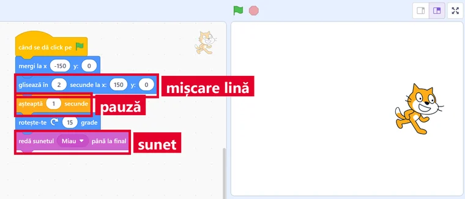</a>
<figcaption>Un script cu toate trei: <em>glisează în 2 secunde</em> (mișcare lină), <em>așteaptă 1 secunde</em> (pauză) și <em>redă sunetul Miau până la final</em>.</figcaption></figure>`,
qs:[
 {t:'choice',q:'Ce bloc duce mingea lin, în 3 secunde, până la poartă?',o:['glisează în 3 secunde la x: 200 y: 0','mergi 200 de pași, dintr-odată','așteaptă 3 secunde, apoi mergi 200 de pași','repetă 3 și, în el, rotește-te 15 grade'],ok:0,why:'Glisarea mută lin, pe durata aleasă. „mergi” sare dintr-odată, „așteaptă” doar face o pauză, iar rotirea nu mută mingea din loc.'},
 {t:'tf',q:'Dacă mărești numărul de secunde din „glisează”, personajul ajunge mai repede.',ok:false,why:'Fals. Aceeași distanță parcursă în mai multe secunde înseamnă mers mai încet.'},
 {t:'choice',q:'Pisica spune „Miau” și abia după ce se termină sunetul pleacă. Ce bloc de sunet folosești?',o:['redă sunetul Miau până la final','pornește sunetul Miau','oprește toate sunetele','modifică volumul cu 10'],ok:0,why:'„redă sunetul … până la final” ține scriptul pe loc până se termină sunetul. Cu „pornește sunetul”, pisica ar pleca în timp ce miaună.'},
 {t:'match',q:'Leagă blocul de ce face.',pairs:[['mergi 10 pași','un salt mic, dintr-odată'],['glisează în 2 secunde','o alunecare lină'],['așteaptă 1 secunde','o pauză'],['pornește sunetul','sunetul începe, iar scriptul merge mai departe']],why:'Mișcarea, pauza și sunetul se combină: din ele se face ritmul animației.'}
]},
{t:'Controlez animația',lectii:[32],continuturi:['Controlul animației prin structuri de control sau de la tastatură'],text:`
<p>Animația o poți controla tu, <mark>de la tastatură</mark>. Blocul <em>când tasta săgeată dreapta este apăsată</em> pornește un script la fiecare apăsare. Sub el pui <em>modifică x cu 10</em>, iar personajul se mută spre dreapta. Pentru stânga pui <em>modifică x cu -10</em>.</p>
<p><mark>Structurile de control</mark> repetă sau aleg:</p>
<ul>
<li><em>repetă 10</em> face pașii de 10 ori;</li>
<li><em>la infinit</em> îi face mereu, până apeși Stop;</li>
<li><em>dacă … atunci</em> face pașii doar când condiția e adevărată, de exemplu <em>dacă atinge marginea?</em>.</li>
</ul>
<figure class="captura"><a href="../animatii-3d-vi/img/scratch-tastatura-control.webp" target="_blank">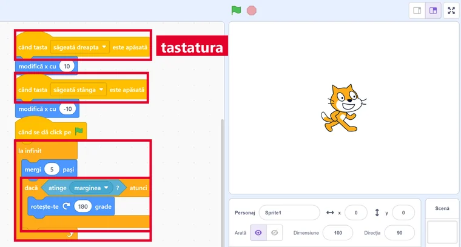</a>
<figcaption>Săgețile mută pisica: <em>modifică x cu 10</em> spre dreapta, <em>cu -10</em> spre stânga. Dedesubt, <em>la infinit</em> cu <em>dacă atinge marginea? atunci</em>.</figcaption></figure>`,
qs:[
 {t:'choice',q:'Ce bloc pornește un script când apeși săgeata stânga?',o:['când tasta săgeată stânga este apăsată','când se dă click pe steagul verde','la infinit','repetă 10'],ok:0,why:'Blocurile care încep cu „când” sunt evenimente: pornesc scriptul. „la infinit” și „repetă” doar repetă ce e în ele.'},
 {t:'choice',q:'Sub „când tasta săgeată stânga este apăsată” ce pui ca personajul să meargă spre stânga?',o:['modifică x cu -10','modifică x cu 10','modifică y cu 10','modifică y cu -10'],ok:0,why:'Stânga-dreapta e axa x. Spre stânga x scade, deci adaugi un număr negativ. y ar muta personajul în sus sau în jos.'},
 {t:'classify',q:'Ce structură de control potrivești?',cats:['repetă …','la infinit','dacă … atunci'],items:[['pisica sare de exact 3 ori',0],['morișca se învârte tot timpul',1],['mingea ricoșează doar când atinge marginea',2],['steaua clipește de 5 ori',0],['norii plutesc până apeși Stop',1],['se aude „Au!” doar când liliacul atinge pisica',2]],why:'Știi de câte ori? „repetă”. Mereu? „la infinit”. Doar uneori, când ceva e adevărat? „dacă … atunci”.'},
 {t:'tf',q:'Blocul „la infinit” oprește singur animația după 10 repetări.',ok:false,why:'Fals. „la infinit” nu se oprește singur. Îl oprești cu butonul Stop. Pentru un număr fix de repetări folosești „repetă”.'}
]},
{t:'Modele 3D',ilustratie:'fără imagine: editorul 3D Tinkercad se deschide doar după conectarea cu un cont Autodesk (verificat pe 20.09.2026: tinkercad.com/things/new răspunde „Sorry, that page is missing … make sure you are signed in”), iar o captură din cont ar arăta date de cont; Paint 3D a fost retras din Microsoft Store',lectii:[33],continuturi:['Forme geometrice tridimensionale','Text tridimensional','Operații specifice modelării 3D disponibile în aplicațiile pentru copii'],text:`
<p>Scena din Scratch e <mark>2D</mark>: are lățime și înălțime. Un model <mark>3D</mark> are și <mark>adâncime</mark>, deci îl poți roti și privi din toate părțile. Cele trei direcții se numesc axele <strong>X</strong>, <strong>Y</strong> și <strong>Z</strong>.</p>
<p>Modelăm în <strong>Tinkercad</strong>, o aplicație gratuită care merge în browser. Acolo Z este înălțimea. Formele de bază sunt 3D: cub, cilindru, sferă, con, piramidă. Forma <mark>Text</mark> face litere cu grosime.</p>
<p>O formă se trage cu mouse-ul, se mărește din pătrățelele albe și se rotește. <kbd>Ctrl</kbd>+<kbd>D</kbd> o duplică. Forma trecută pe <mark>gaură</mark> (<em>Hole</em>) decupează, iar <kbd>Ctrl</kbd>+<kbd>G</kbd> grupează formele.</p>
<p>Paint 3D, din manualele mai vechi, a fost scos din Microsoft Store în noiembrie 2024.</p>`,
qs:[
 {t:'choice',q:'Ce are în plus un model 3D față de un desen 2D?',o:['Adâncime','Culoare','Sunet','Mai mulți pixeli'],ok:0,why:'Și un desen 2D are culori și pixeli. A treia dimensiune, adâncimea, îți permite să rotești obiectul și să-l vezi din spate.'},
 {t:'classify',q:'Formă plană (2D) sau corp (3D)?',cats:['2D','3D'],items:[['pătrat',0],['cub',1],['cerc',0],['sferă',1],['triunghi',0],['piramidă',1]],why:'Cubul e „pătratul cu adâncime”, sfera e „cercul cu adâncime”, piramida are fețe triunghiulare.'},
 {t:'match',q:'Leagă operația din Tinkercad de rezultatul ei.',pairs:[['Ctrl+D','face o copie a formei'],['Ctrl+G','unește formele selectate într-un grup'],['Gaură (Hole)','decupează din forma cu care e grupată'],['pătrățelele albe','schimbă mărimea formei']],why:'Cu forme de bază, copii, găuri și grupări construiești aproape orice: o cană e un cilindru din care scoți un cilindru-gaură.'},
 {t:'tf',q:'În Scratch poți face un model 3D pe care să-l rotești ca să-l vezi din spate.',ok:false,why:'Fals. Scena din Scratch e plană (2D). Pentru modele pe care le rotești în spațiu îți trebuie o aplicație 3D, de exemplu Tinkercad.'},
 {t:'choice',q:'Un manual mai vechi îți cere să instalezi Paint 3D din Microsoft Store. Ce e adevărat?',o:['A fost scos din Store în 2024; folosești altă aplicație 3D','E cea mai nouă aplicație 3D, primită cu fiecare Windows','Face parte din Scratch și se deschide din fila Costume','E doar alt nume pentru Paint-ul obișnuit din Windows'],ok:0,why:'Microsoft a scos Paint 3D din Microsoft Store pe 4 noiembrie 2024. Pentru modele 3D folosim acum altă aplicație, de exemplu Tinkercad.'},
 {t:'choice',q:'În Tinkercad ridici o formă mai sus. Care coordonată se schimbă?',o:['Z','X','Y','Niciuna'],ok:0,why:'În Tinkercad, X și Y sunt pe planul de lucru, iar Z este înălțimea. Când ridici forma, crește Z.'}
]},
{t:'Mini-proiect: De la floare la fruct',final:true,lectii:[34],continuturi:['Scenariul unei animații: compoziție, cadre, obiecte animate','Operații specifice de realizare a unei animații: efecte de mișcare, temporizare, efecte sonore','Controlul animației prin structuri de control sau de la tastatură'],text:`
<p>Faci pentru colegii de clasa a V-a o animație în Scratch: <mark>„De la floare la fruct”</mark>.</p>
<p><strong>Scenariul:</strong> personajul „Pom” are 4 costume (cadre): boboc, floare, floare cu albină, măr. Între costume e o pauză de 2 secunde. O albină glisează spre floare. Când apare mărul, se aude un sunet.</p>
<p><strong>Controlul:</strong> tasta spațiu pornește din nou povestea.</p>
<p><strong>La final:</strong> testezi, repari, salvezi proiectul <code>.sb3</code> și îl arăți pe ecran complet.</p>
<p>Pentru bonus poți modela mărul și în 3D.</p>
<figure class="captura"><a href="../animatii-3d-vi/img/scratch-pom-costume.webp" target="_blank">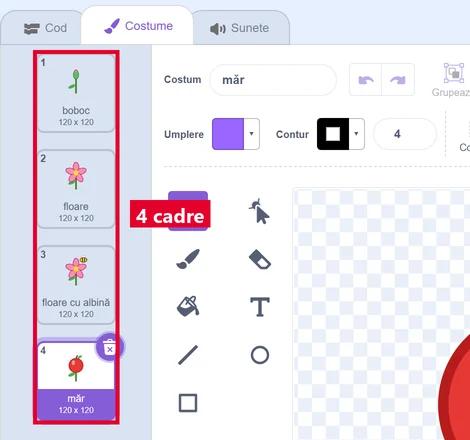</a>
<figcaption>Personajul „Pom” cu cele 4 costume (cadre): boboc, floare, floare cu albină, măr.</figcaption></figure>
<figure class="captura"><a href="../animatii-3d-vi/img/scratch-pom-scripturi.webp" target="_blank">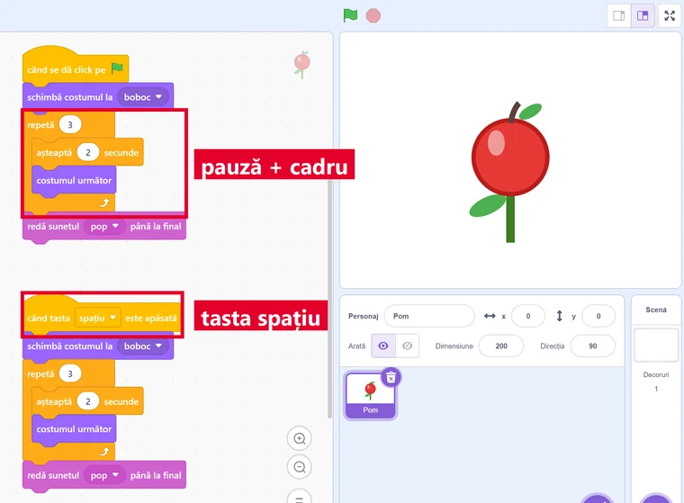</a>
<figcaption>Steagul verde și tasta <b>spațiu</b> pornesc povestea: de 3 ori <em>așteaptă 2 secunde</em> și <em>costumul următor</em>, apoi sunetul. Pe scenă, ultimul cadru: mărul.</figcaption></figure>`,
qs:[
 {t:'choice',q:'Ce bloc face pauza de 2 secunde între boboc și floare?',o:['așteaptă 2 secunde','glisează în 2 secunde','mergi 2 pași','repetă 2'],ok:0,why:'Pauza e temporizare, deci „așteaptă”. „glisează” ar muta Pomul, iar „repetă 2” ar face de două ori aceiași pași.'},
 {t:'order',q:'Pune în ordine etapele mini-proiectului.',items:['Scrii scenariul','Pregătești decorul și personajele','Construiești scripturile','Testezi și repari','Salvezi .sb3 și prezinți pe ecran complet'],why:'Planul vine primul, prezentarea la urmă. Nu prezinți o animație netestată.'},
 {t:'choice',q:'Cu ce bloc începi scriptul „tasta spațiu pornește din nou povestea”?',o:['când tasta spațiu este apăsată','când se dă click pe acest personaj','la infinit','dacă … atunci'],ok:0,why:'E un eveniment de la tastatură, deci un bloc „când tasta … este apăsată”, cu tasta spațiu aleasă din listă.'},
 {t:'tf',q:'Ca mărul să apară încet, poți porni cu efectul fantomă la 100 și să-l scazi treptat până la 0.',ok:true,why:'Adevărat. La 100 mărul nu se vede. Scăzând puțin câte puțin, de exemplu cu „repetă”, devine vizibil treptat.'},
 {t:'classify',q:'În ce aplicație faci fiecare parte?',cats:['Scratch','Tinkercad'],items:[['albina care zboară spre floare',0],['mărul pe care îl rotești din toate părțile',1],['tasta spațiu care pornește povestea',0],['numele clasei cu litere în relief',1]],why:'Scratch = animație 2D cu scripturi și taste. Tinkercad = modele 3D, inclusiv text cu grosime.'}
]}
];

JocMotor.porneste({
  cheie:'joc_animatii_3d_vi',
  titlu:'Misiunea Cadru',
  marca:'Misiunea <b>Cadru</b>',
  h1:'Misiunea Cadru<span class="sag"> ▶</span>',
  clasa:'a VI-a',
  unitate:'VI-U4',
  unitateTitlu:'Animații grafice și modele 3D',
  competente:['CS.1.2','CS.3.2','CS.3.3'],
  lectii:'27–34',
  intro:'Opt niveluri despre animații: studioul Scratch, proiectul tău, scenariul și cadrele, proprietățile personajelor, mișcarea, timpul și sunetul, controlul de la tastatură și primele modele 3D. La fiecare nivel citești o pagină scurtă și răspunzi la întrebări. La final plănuiești o animație adevărată și îți iei diploma.',
  banda:BANDA,
  nivele:LEVELS,
  diploma:{
    titlu:'Regizor de animații',
    rezumat:'interfața Scratch, gestionarea proiectului, scenariul și cadrele, editarea compoziției și a proprietăților, mișcarea, temporizarea și sunetul, controlul de la tastatură și modelele 3D',
    aplicatie:'Scratch (iar pentru bonusul 3D, Tinkercad)',
    provocare:[
      'Scrie în caiet scenariul „De la floare la fruct”: 4 cadre, cine apare și ce se aude.',
      'În Scratch, fă personajul „Pom” cu 4 costume: boboc, floare, floare cu albină, măr.',
      'Schimbă costumele cu pauze de 2 secunde, fă albina să gliseze spre floare și pune un sunet la apariția mărului.',
      'Adaugă scriptul: când tasta spațiu este apăsată, povestea pornește din nou.',
      'Testează, repară și salvează ca <code>Nume_Prenume_floare.sb3</code>.',
      'Bonus: în Tinkercad, modelează un măr din sferă și cilindru.'
    ]
  }
});
</script>
</body>
</html>
